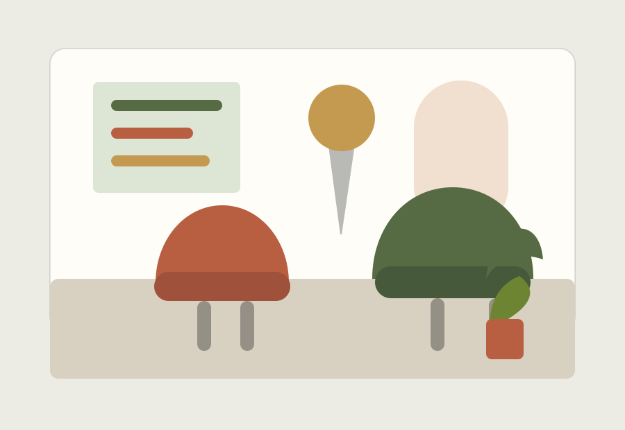

Raumdiagnose
Nutzung, Licht und Materialzustand werden vor dem Design sichtbar gemacht.
Interior Design
Kern Studio uebersetzt Wohn- und Arbeitsraeume in ruhige Systeme aus Material, Licht und Nutzbarkeit.

Prozess
Die Seite zeigt Service-Qualitaet durch klare Phasen und schafft schnell Vertrauen in den kreativen Ablauf.
Nutzung, Licht und Materialzustand werden vor dem Design sichtbar gemacht.
Farb- und Oberflaechenentscheidungen folgen einem nachvollziehbaren Leitfaden.
Lieferanten, Timings und Details werden fuer Kundinnen und Kunden greifbar.
"Kern Studio hat unserem Raum Ruhe gegeben, ohne ihn unpersoenlich zu machen."
Privatkunde, BerlinErstgespraech
Ein Beratungs-CTA passt zum hochpreisigen Service und fuehrt ohne Druck in den Dialog.